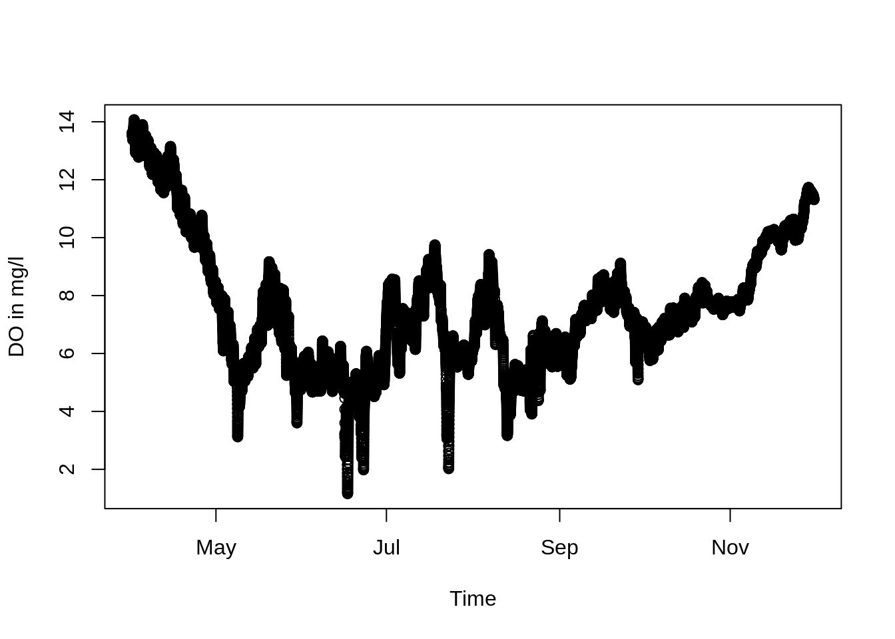
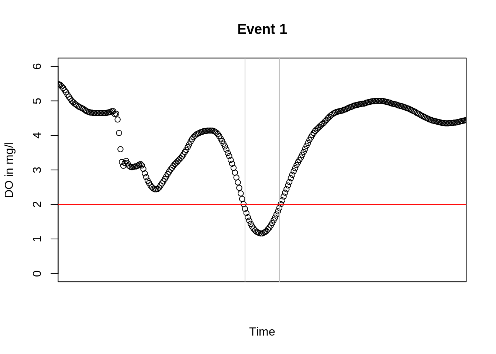
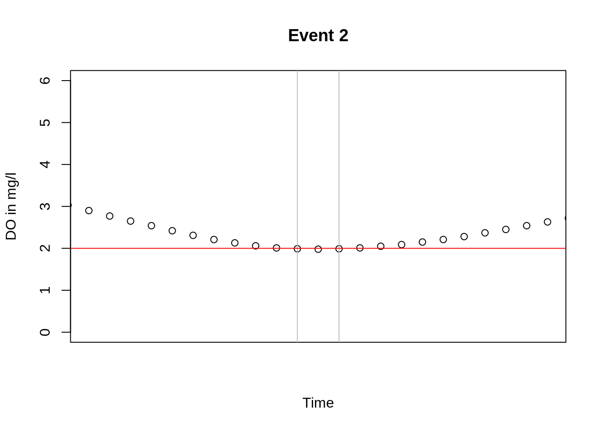

vignettes/tutorial.Rmd
tutorial.Rmd# install.packages("devtools")
remotes::install_github("kwb-r/kwb.resilience", dependencies = TRUE, build_vignettes = TRUE)note: this will also install two handy KWB packages kwb.event and kwb.plot and their CRAN dependencies.
We use the following plot function within this tutorial to look at our data:
Let’s have a look at some example data, which is included in kwb.resilience:
# Show the first lines of the example data
head(oxygen)
#> timestamp S2_storage_2020 S3_storage_increase
#> 1 2007-04-01 00:00:00 13.73 13.63
#> 2 2007-04-01 00:15:00 13.71 13.62
#> 3 2007-04-01 00:30:00 13.70 13.60
#> 4 2007-04-01 00:45:00 13.69 13.59
#> 5 2007-04-01 01:00:00 13.67 13.57
#> 6 2007-04-01 01:15:00 13.66 13.56
#> S4_red_Imp_Surface S5_increase_in_DO
#> 1 13.63 13.77
#> 2 13.62 13.75
#> 3 13.60 13.74
#> 4 13.59 13.72
#> 5 13.57 13.71
#> 6 13.56 13.70
# Plot the example data
plot_dissolved_oxygen_S4(oxygen)
The following sections demonstrate the three main functions of the package:
The function resilience.severity calculates severity as outlined in Matzinger et al. (2018). The following example applies the function for scenario 4 of the test data set, using Pa = 2 mg/L as a lower threshold (for river fish) and Pmax = 0 mg/L as worst possible performance. Note: The function also works for upper thresholds.
Sev.S4 <- resilience.severity(
time_stamp = oxygen$timestamp,
Pt = oxygen$S4_red_Imp_Surface,
Pa = 2,
Pmax = 0
)
Sev.S4
#> [1] 0.0003069501The resilience index Res0 can then be calculated as 1-severity:
A time series can contain several events when performance P(t) violates acceptable threshold Pa. The function resilience.events allows calculation of resilience indices separately for each event. Each line in the resulting data.frame shows one event. Again, let’s make an example for scenario 4:
# Define the acceptable performance
Pa <- 2
# Calculate Events
events.S4 <- resilience.events(
time_stamp = oxygen$timestamp,
Pt = oxygen$S4_red_Imp_Surface,
Pa = Pa,
Pmax = 0,
evtSepTime = 6 * 60 * 60,
signalWidth = 15 * 60
)
events.S4
#> tBeg tEnd dur pBefore pAfter Sev
#> 1 2007-06-16 23:45:00 2007-06-17 05:45:00 22500 NA 479700 0.2963542
#> 2 2007-06-22 19:15:00 2007-06-22 19:45:00 2700 479700 NA 0.0075000
#> Res0 trec trec_percent worst_P
#> 1 0.7036458 10800 48.00000 1.16
#> 2 0.9925000 900 33.33333 1.98Let’s plot the two failure events of scenario 4 (beginning and end is marked by vertical grey lines). The red line shows Pa = 2 mg/L. For the evaluation of resilience indices severity and Res0, only the area below Pa is integrated (in the case of an upper threshold it would be the area above Pa).
# Plot Events
library(kwb.utils)
for (i in seq_len(nrow(events.S4))) {
event <- events.S4[i, ]
xlim <- kwb.utils::extendLimits(kwb.event::eventToXLim(event), 5)
plot_dissolved_oxygen_S4(oxygen, xlim = xlim, ylim = c(0,6),
main = paste("Event", i))
abline(v = unlist(event[, c("tBeg", "tEnd")]), col = "grey")
abline(h = Pa, col = "red")
}
The function resi.summary allows calculating resilience indices from Matzinger et al. (2018) for entire time series. The function combines complete integration of time series (e.g., for Res0) with event means (such as mean recovery time in per cent mean_trec_percent). In the case of resilience.summary all the time series (scenarios in test data) are evaluated. Each line of result shows result for one time series:
resi.summary <- resilience.summary(
time_stamp = oxygen$timestamp,
Pt = oxygen[, setdiff(names(oxygen), "timestamp")],
Pa = 2,
Pmax = 0,
evtSepTime = 6 * 60 * 60,
signalWidth = 15 * 60
)
resi.summary
#> time_series num_events worst_P total_dur total_trec mean_trec_percent
#> 1 1 4 0.45 77400 37800 49.81982
#> 2 2 4 0.46 71100 35100 47.97619
#> 3 3 2 1.16 25200 11700 40.66667
#> 4 4 3 1.09 41400 19800 46.09195
#> Sev Res0
#> 1 0.0014203381 0.9985797
#> 2 0.0011772114 0.9988228
#> 3 0.0003069501 0.9996930
#> 4 0.0004192281 0.9995808